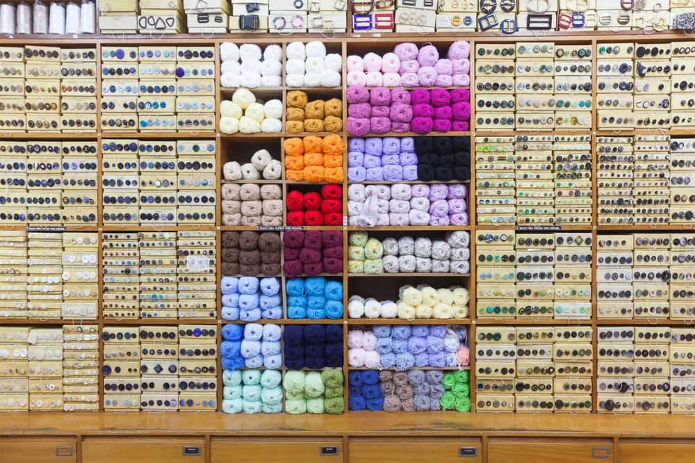
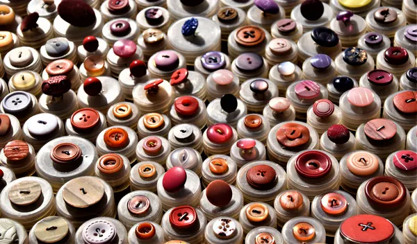
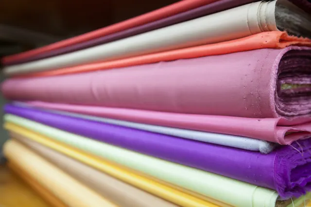
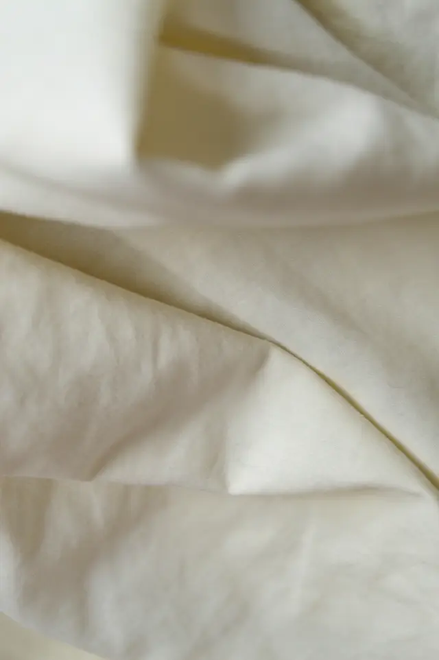
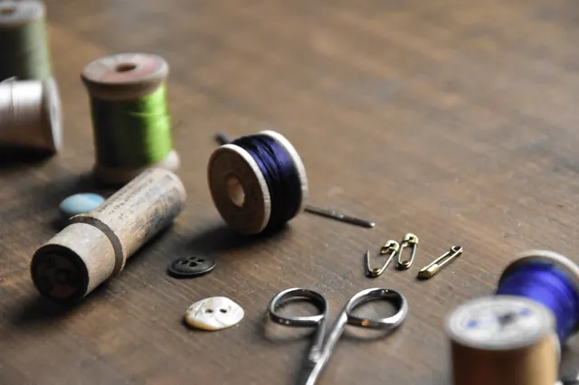
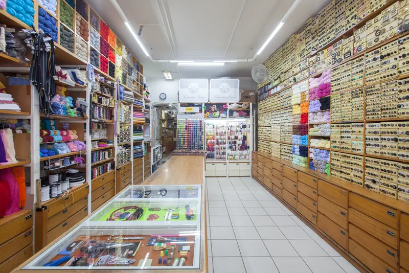
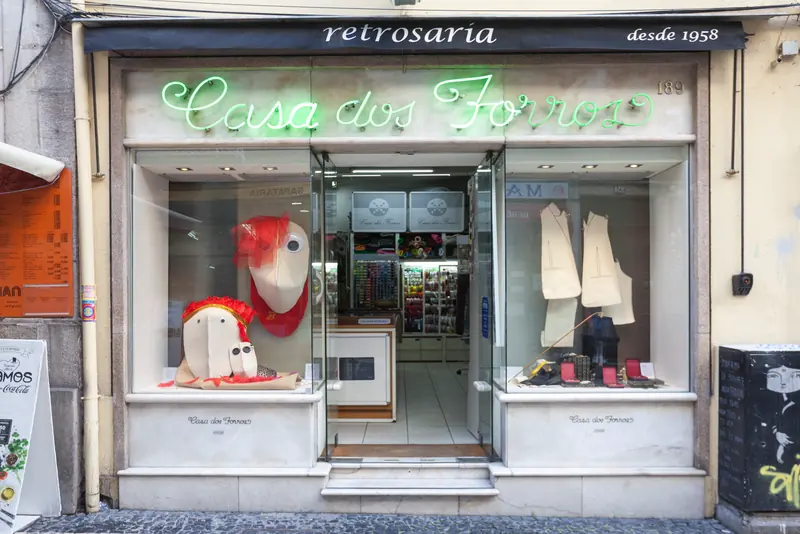

Botões, forros e entretelas para quem costura.
Paredes de botões e rolos de forro na Rua de Cedofeita, para costureiras, alfaiates e quem faz a sua própria roupa.
Do botão ao forro.
-

Botões
Senhora, homem, criança e fardamento.
-

Forros
Malha, tafetá e forros de fantasia.
-

Entretelas
Termocolantes, solúveis, dupla face e telas.
-

Chumaços e miudezas
Enchimentos, chumaços, copas, alfinetes e agulhas.
Procura um botão igual ao que perdeu? Ligue e pergunte antes de vir.
222 007 765
Na mesma família desde 1958.
Abriu nos anos 20. Com a família Pinheiro vieram os artigos importados para alfaiates e, desde os anos 80, as montras premiadas. Hoje gerem-na Eduarda Pinheiro e Jorge Coelho.

Venha escolher ao balcão.
- Morada
- Rua de Cedofeita, 189
4050-179 Porto - Horário
- Segunda a sexta 9h30–19h00
Sábado 9h30–12h30
Domingo fechado